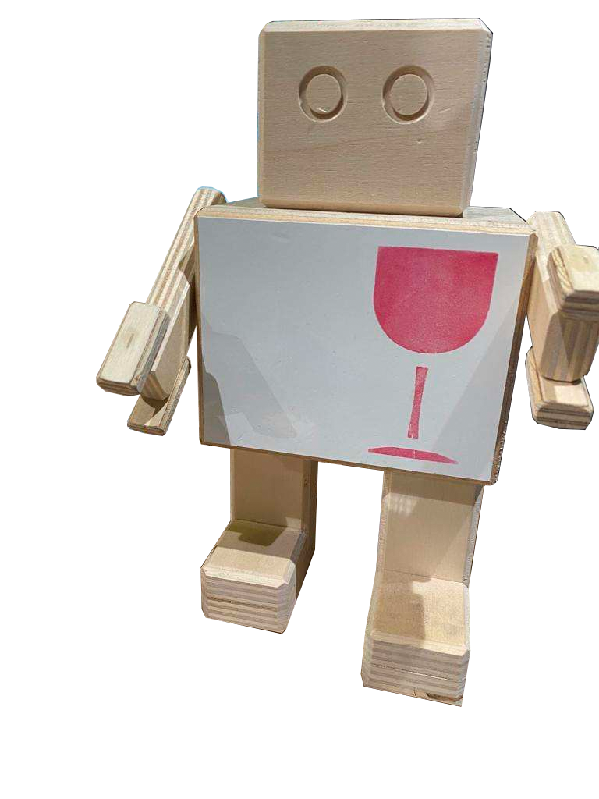
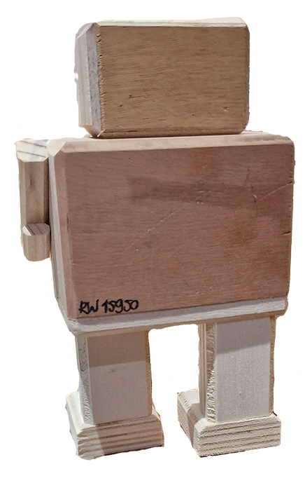
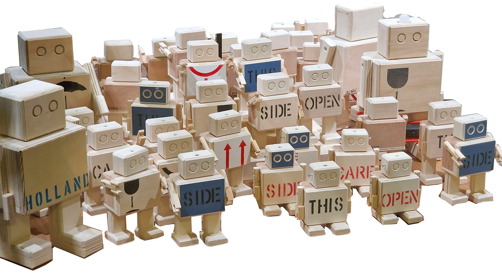

Wist je dat?
De gemiddelde Rijkswachter $65 kost?!
Elke Rijkswachter heeft zijn eigen unieke nummer op de achterkant staan die aangeeft van welk kunstwerk de wachter is gemaakt!
Er zijn nu al duizenden rijkswachters gemaakt en dat de voorraad aan energie om ze te maken eerder op zal raken dan het aantal kisten dat er zijn!
De grootste Rijkswachter kost zo’n $335,- en is wel 90cm hoog!